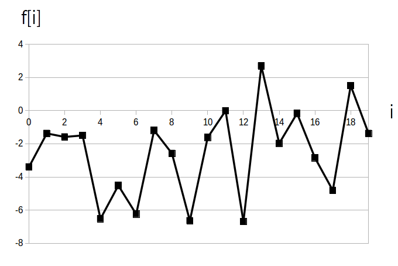
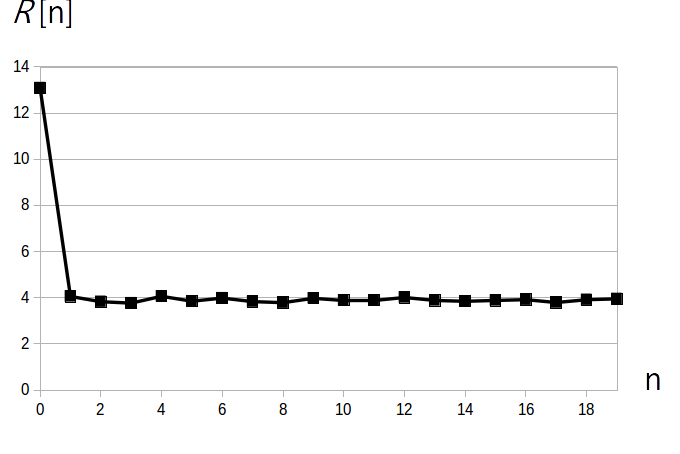

$f[i]$ が一様分布や正規分布の様な白色雑音(ホワイトノイズ)の場合、$f[i]$ と $f[i+n]$ が無相関なので $n > 0$ の $R[n]$ の値はほぼ一定値になります。
具体的には $f[i]$ が平均 $\mu$、分散 $\sigma^2$ の白色雑音なら、理論値である
\[ R[0] = \mu^2 + \sigma^2 \] \[ R[n] = \mu^2 \ ,\ n \geq 1 \]に近づきます。 ※ 導出はこのページの下の方を参照
ではここで例として平均 $\mu = -2$、分散 $\sigma^2 = 9$ の正規乱数を N=10000 点生成した信号を考えます。
実際に得られた信号は以下の図1です。

この信号の自己相関関数のグラフが以下の図2です。

この様に自己相関関数を計算してみたら $R[0]$ は $\mu^2 + \sigma^2 = 13$ に近く、その他の自己相関関数値は $\mu^2 = 4 $ に近い値でほぼ一定なので、元の信号は白色雑音であることが分かります。
ここで $e[i]$ は各時刻毎に独立な平均 $\mu$、分散 $\sigma^2$ の白色雑音とする。
\begin{align*} R[n] &= \textrm{E}( e[i] \cdot e[i+n] ) \\[5pt] &= \textrm{E} \left \{ (e[i] - \mu)\cdot(e[i+n]-\mu) +\mu\cdot e[i] + \mu \cdot e[i+n] - \mu^2 \right \} \\[5pt] &= \textrm{E} \left \{ (e[i] - \mu)\cdot(e[i+n]-\mu) \right \} + \mu^2 \end{align*}となるので、 $n = 0$ の時は
\[ R[0] = \mu^2 + \sigma^2 \]$n \neq 0$ の時は $e[i]$ が各時刻毎に独立であることから共分散は 0 であるので
\[ R[n] = \mu^2 \]となる。